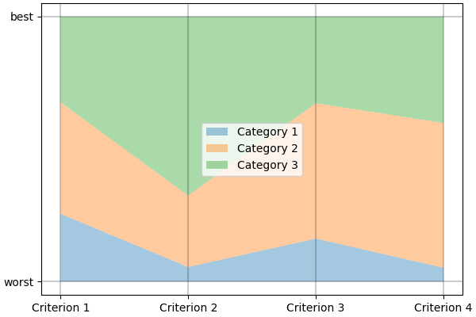
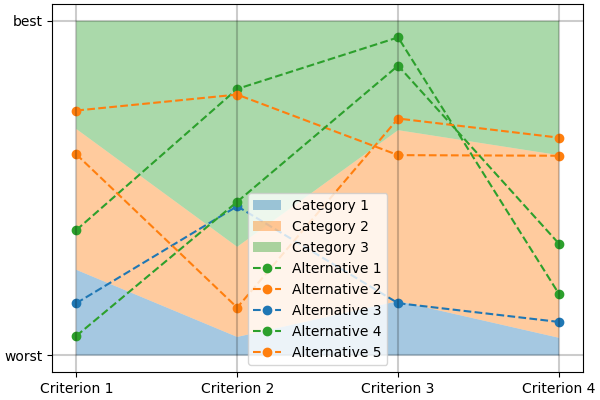

Get started¶
Get lincs¶
We provide binary wheels for lincs on Linux, Windows and macOS for x86_64 processors,
so running pip install lincs --only-binary lincs should be enough on those systems.
We generally recommend you use pip in a virtual environment (python -m venv) or directly pipx to install any package, including lincs.
Recent Ubuntu systems will even enforce that, by refusing to install PyPI packages in the “externally managed” default environment.
Alternatively, you can use our Docker image (docker run --rm -it jacquev6/lincs:latest) and run the commands below in there.
If you’re on a platform for which we don’t make wheels and our Docker image doesn’t cover your needs, you’ll have to build lincs from sources.
We don’t recommend you do that, because it can be a lot of work.
If you really want to go that route, you may want to start by reading the GitHub Actions workflow we use to build the binary wheels.
You’ll probably start by trying pip install lincs, see what dependencies are missing, install them and iterate from there.
If you end up modifying lincs to make it work on your platform, we kindly ask you to contribute your changes back to the project.
Start using lincs’ command-line interface¶
Even if you plan to use lincs mainly through its Python API, we do recommend you go through this section first. It will make it easier for you when you go through our Python API guide.
If you’re a Jupyter user, you can download the notebook this section is based on.
The command-line interface is the easiest way to get started with lincs, starting with lincs --help, which should output something like:
Usage: lincs [OPTIONS] COMMAND [ARGS]...
lincs (Learn and Infer Non-Compensatory Sorting) is a set of tools for
training and using MCDA models.
Options:
--version Show the version and exit.
--help Show this message and exit.
Commands:
classification-accuracy Compute a classification accuracy.
classify Classify alternatives.
describe Provide human-readable descriptions.
generate Generate synthetic data.
info Get information about lincs itself.
learn Learn a model.
visualize Make graphs from data.
It’s organized into sub-commands, the first one being generate, to generate synthetic pseudo-random data.
lincs is designed to handle real-world data, but it’s often easier to start with synthetic data to get familiar with the tooling and required file formats. Synthetic data is described in our conceptual overview documentation.
So, start by generating a classification problem with 4 criteria and 3 categories:
lincs generate classification-problem 4 3 --output-problem problem.yml
The generated problem.yml should look like:
# Reproduction command (with lincs version 1.1.0a20): lincs generate classification-problem 4 3 --random-seed 40
kind: classification-problem
format_version: 1
criteria:
- name: Criterion 1
value_type: real
preference_direction: increasing
min_value: 0
max_value: 1
- name: Criterion 2
value_type: real
preference_direction: increasing
min_value: 0
max_value: 1
- name: Criterion 3
value_type: real
preference_direction: increasing
min_value: 0
max_value: 1
- name: Criterion 4
value_type: real
preference_direction: increasing
min_value: 0
max_value: 1
ordered_categories:
- name: Worst category
- name: Intermediate category 1
- name: Best category
You can edit this file to change the criteria names, the number of categories, etc. as long as you keep the same format. That format is explained in details in our user guide. The concept of “classification problem” is described in our conceptual overview documentation. Note that to keep this “Get Started” simple, we only consider the most basic kind of criteria: real-valued, with normalized minimal and maximal values, and increasing preference direction. There are many other kinds of criteria, and you can read about them in our user guide.
If you want a human-readable explanation of the problem, you can use:
lincs describe classification-problem problem.yml
It will tell you something like:
This a classification problem into 3 ordered categories named "Worst category", "Intermediate category 1" and "Best category".
The best category is "Best category" and the worst category is "Worst category".
There are 4 classification criteria (in no particular order).
Criterion "Criterion 1" takes real values between 0.0 and 1.0 included.
Higher values of "Criterion 1" are known to be better.
Criterion "Criterion 2" takes real values between 0.0 and 1.0 included.
Higher values of "Criterion 2" are known to be better.
Criterion "Criterion 3" takes real values between 0.0 and 1.0 included.
Higher values of "Criterion 3" are known to be better.
Criterion "Criterion 4" takes real values between 0.0 and 1.0 included.
Higher values of "Criterion 4" are known to be better.
Then generate an NCS classification model:
lincs generate classification-model problem.yml --output-model model.yml
It should look like:
# Reproduction command (with lincs version 1.1.0a20): lincs generate classification-model problem.yml --random-seed 41 --model-type mrsort
kind: ncs-classification-model
format_version: 1
accepted_values:
- kind: thresholds
thresholds: [0.255905151, 0.676961303]
- kind: thresholds
thresholds: [0.0551739037, 0.324553937]
- kind: thresholds
thresholds: [0.162252158, 0.673279881]
- kind: thresholds
thresholds: [0.0526000932, 0.598555863]
sufficient_coalitions:
- &coalitions
kind: weights
criterion_weights: [0.147771254, 0.618687689, 0.406786472, 0.0960085914]
- *coalitions
The file format, including the *coalitions YAML reference, is documented in our user guide.
You can visualize it using:
lincs visualize classification-model problem.yml model.yml model.png
It should output something like:
The model format is quite generic to ensure lincs can evolve to handle future models, so you may want to get a human-readable description of a model, including wether it’s an MR-Sort or Uc-NCS model, using:
lincs describe classification-model problem.yml model.yml
It should output something like:
This is a MR-Sort (a.k.a. 1-Uc-NCS) model: an NCS model where the sufficient coalitions are specified using the same criterion weights for all boundaries.
The weights associated to each criterion are:
- Criterion "Criterion 1": 0.15
- Criterion "Criterion 2": 0.62
- Criterion "Criterion 3": 0.41
- Criterion "Criterion 4": 0.10
To get into an upper category, an alternative must be better than the following profiles on a set of criteria whose weights add up to at least 1:
- For category "Intermediate category 1": at least 0.26 on criterion "Criterion 1", at least 0.06 on criterion "Criterion 2", at least 0.16 on criterion "Criterion 3", and at least 0.05 on criterion "Criterion 4"
- For category "Best category": at least 0.68 on criterion "Criterion 1", at least 0.32 on criterion "Criterion 2", at least 0.67 on criterion "Criterion 3", and at least 0.60 on criterion "Criterion 4"
And finally generate a set of classified alternatives:
lincs generate classified-alternatives problem.yml model.yml 1000 --output-alternatives learning-set.csv
The file format is documented in our reference documentation.
@todo(Feature, later) Should we provide utilities to split a set of alternatives into a training set and a testing set?
Currently we suggest generating two sets from a synthetic model, but for real-world data it could be useful to split a single set.
Then we’ll need to think about the how the --max-imbalance option interacts with that feature.
It should start with something like this, and contain 1000 alternatives:
# Reproduction command (with lincs version 1.1.0a20): lincs generate classified-alternatives problem.yml model.yml 1000 --random-seed 42 --misclassified-count 0
name,"Criterion 1","Criterion 2","Criterion 3","Criterion 4",category
"Alternative 1",0.37454012,0.796543002,0.95071429,0.183434784,"Best category"
"Alternative 2",0.731993914,0.779690981,0.598658502,0.596850157,"Intermediate category 1"
"Alternative 3",0.156018645,0.445832759,0.15599452,0.0999749228,"Worst category"
"Alternative 4",0.0580836125,0.4592489,0.866176128,0.333708614,"Best category"
"Alternative 5",0.601114988,0.14286682,0.708072603,0.650888503,"Intermediate category 1"
You can visualize its first five alternatives using:
lincs visualize classification-model problem.yml model.yml --alternatives learning-set.csv --alternatives-count 5 alternatives.png
It should output something like:
You now have a (synthetic) learning set. You can use it to train a new model:
lincs learn classification-model problem.yml learning-set.csv --output-model trained-model.yml
The trained model has the same structure as the original (synthetic) model because they are both MR-Sort models for the same problem. The learning set doesn’t contain all the information from the original model, and the trained model was reconstituted from this partial information, so it is numerically different:
# Reproduction command (with lincs version 1.1.0a20): lincs learn classification-model problem.yml learning-set.csv --model-type mrsort --mrsort.strategy weights-profiles-breed --mrsort.weights-profiles-breed.models-count 9 --mrsort.weights-profiles-breed.accuracy-heuristic.random-seed 43 --mrsort.weights-profiles-breed.initialization-strategy maximize-discrimination-per-criterion --mrsort.weights-profiles-breed.weights-strategy linear-program --mrsort.weights-profiles-breed.linear-program.solver glop --mrsort.weights-profiles-breed.profiles-strategy accuracy-heuristic --mrsort.weights-profiles-breed.accuracy-heuristic.processor cpu --mrsort.weights-profiles-breed.breed-strategy reinitialize-least-accurate --mrsort.weights-profiles-breed.reinitialize-least-accurate.portion 0.5 --mrsort.weights-profiles-breed.target-accuracy 1.0
kind: ncs-classification-model
format_version: 1
accepted_values:
- kind: thresholds
thresholds: [0.339874953, 0.421424538]
- kind: thresholds
thresholds: [0.0556534864, 0.326433569]
- kind: thresholds
thresholds: [0.162616938, 0.67343241]
- kind: thresholds
thresholds: [0.0878681168, 0.252649099]
sufficient_coalitions:
- &coalitions
kind: weights
criterion_weights: [0, 1.01327896e-06, 0.999998987, 0]
- *coalitions
If the training is effective, the resulting trained model should however behave closely to the original one. To see how close a trained model is to the original one, you can reclassify a testing set.
First, generate a testing set from the original model:
lincs generate classified-alternatives problem.yml model.yml 3000 --output-alternatives testing-set.csv
Then ask the trained model to classify it:
lincs classify problem.yml trained-model.yml testing-set.csv --output-alternatives reclassified-testing-set.csv
There are a few differences between the original testing set and the reclassified one:
diff testing-set.csv reclassified-testing-set.csv
That command should show a few alternatives that are not classified the same way by the original and the trained model:
522c522
< "Alternative 520",0.617141366,0.326259822,0.901315808,0.460642993,"Best category"
---
> "Alternative 520",0.617141366,0.326259822,0.901315808,0.460642993,"Intermediate category 1"
615c615
< "Alternative 613",0.547554553,0.0552174859,0.690436542,0.511019647,"Intermediate category 1"
---
> "Alternative 613",0.547554553,0.0552174859,0.690436542,0.511019647,"Worst category"
2596c2596
< "Alternative 2594",0.234433308,0.780464768,0.162389532,0.622178912,"Intermediate category 1"
---
> "Alternative 2594",0.234433308,0.780464768,0.162389532,0.622178912,"Worst category"
2610c2610
< "Alternative 2608",0.881479025,0.055544015,0.82936728,0.853676081,"Intermediate category 1"
---
> "Alternative 2608",0.881479025,0.055544015,0.82936728,0.853676081,"Worst category"
You can also measure the classification accuracy of the trained model on that testing set:
lincs classification-accuracy problem.yml trained-model.yml testing-set.csv
It should be close to 100%:
2996/3000
What now?¶
If you haven’t done so yet, we recommend you now read our conceptual overview documentation.
Keep in mind that we’ve only demonstrated the default learning approach in this guide. See our user guide for more details.
Once you’re comfortable with the concepts and tooling, you can use a learning set based on real-world data and train a model that you can use to classify new real-world alternatives.